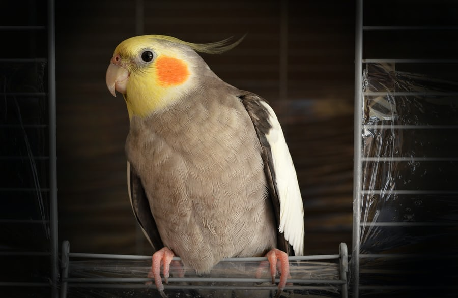
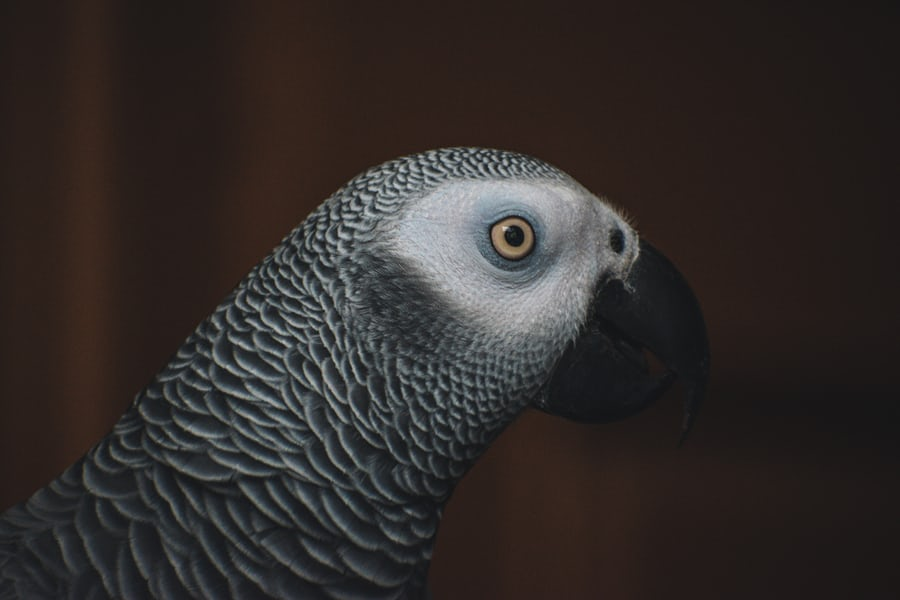
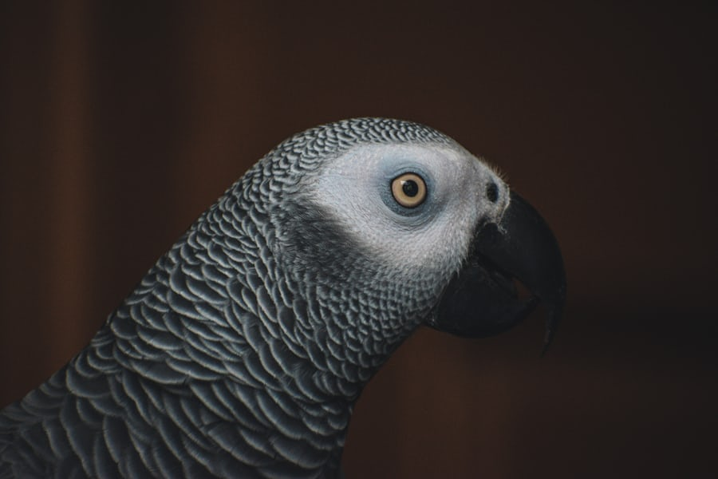
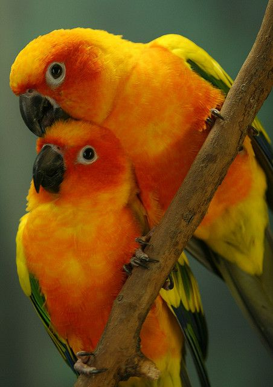
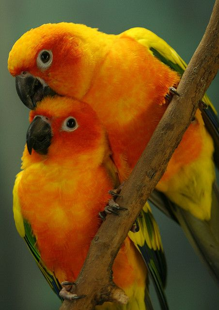

My Favorite Types of Parrots and Cackatoos
Their are so many different kinds of these exotic birds but I will just name a few of my favorites.
These include the Cockatiel, the white Cockatoo, Lorikeets, African Grey Parrot, Pionus parrots, large Conures, and Eclectus. These exotic parrots and cockatoos are very vibrant, small and larger, and you can even have them as a pet. But I can look at the color of their feathers all day. So here are some last looks!

 

 
